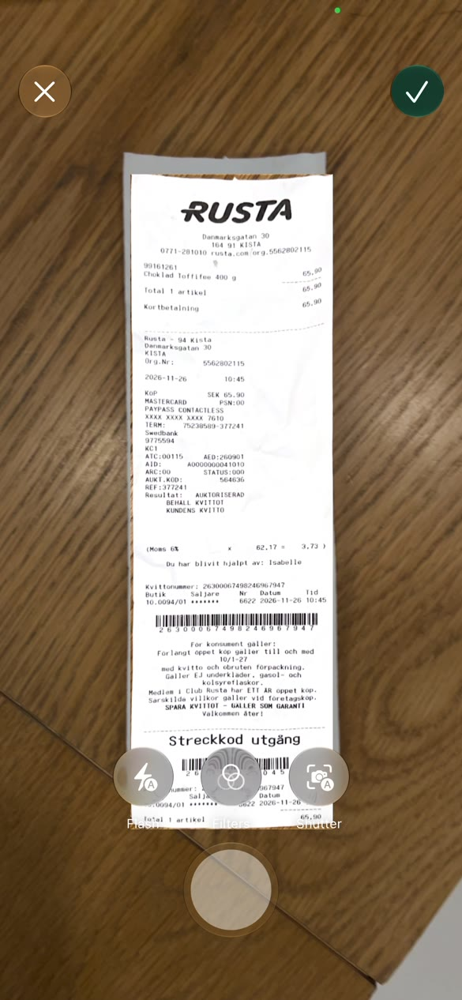

Snap it.
Open the app and point it at the receipt. The edges are found for you. No iPhone? Drop a photo or PDF on the Mac.
It reads it.
Supplier, date, total, VAT and payment, in seconds. Every value sits next to the words it came from, so you can check it at a glance.
You approve.
If something is unclear, LedgerFlow asks you instead of guessing. You get a notification. Nothing is written until you say yes.
It's in your books.
The entry lands in the exact cells of your own workbook. The previous version stays, so you can always go back.
Snap the receipt.
It's in your Excel.
LedgerFlow is an accounting agent for small businesses. Photograph a receipt, and it books it in the workbook you already use. It asks before it writes a single cell.
No account needed. Opens a shared demo workspace with fictional data, on any browser: Windows, Android, Mac.
| A | B | C | D | |
|---|---|---|---|---|
| 4 | 2026-11-24 | Clas Ohlson | 5410 | 249.00 |
| 5 | 2026-11-25 | SJ AB | 5800 | 412.00 |
| 6 | 2026-11-26 | Rusta | 5410 | 62.17 |
| 7 | 2026-11-26 | Rusta · VAT 6 % | 2640 | 3.73 |
| 8 |

Real iPhone capture · illustrative sheet rows
A shoebox of receipts.
An evening in Excel.
Read the total. Work out the VAT. Find the right account. Type it in. Check it balances. Then the next one. LedgerFlow does that part, in your own file, and leaves the decisions to you.
Four moments.
That's the whole job.
Made for the receipts
you actually have.
- The hardware run
- Screws, boxes, a lamp from Rusta. Snapped in the car park, booked to the right expense account with 6 % or 25 % VAT before you are home.
- The trip abroad
- A taxi in euros. Converted to kronor at the Riksbank rate of the day, with foreign VAT kept out of your deduction.
- The duplicate
- The same receipt sent twice from two phones. LedgerFlow notices and holds the second one for you.
- The accountant
- Clients send receipts from their phones. You open the Mac to a queue of proposed entries, each one ready to approve or correct.
The AI never touches
your books alone.
It reads. A model on Vultr reads the receipt. Reading is all it is trusted with.
Rules decide. Fixed Swedish accounting rules, not the model, choose debit, credit and VAT.
A sealed box writes. The small program that edits your file runs in a container with no internet and no keys, then the container is destroyed.
You approve. An independent checker re-opens the file. Your yes is tied to that exact file, by its fingerprint.
See the engineering
docker · python:3.12-slim
- --network none
- --read-only · uid 10001 · cap-drop ALL
- 1 CPU · 512 MB · 128 pids
- /work tmpfs 128 MiB · 30 s deadline
- destroyed after every run
- Read Vultr Serverless Inference, qwen3.8-27b
- Plan deterministic rules pick the exact cells
- Write generated Python runs in the sandbox
- Verify 21 checks on the real output file
- Approve bound to the file's sha256
22/22test receipts booked right, live on Vultr
13/13escape attempts contained by the sandbox
16/16tampered files rejected by the checker
$0.004of inference per receipt
Synthetic benchmark of fictional receipts, measured 27 Nov 2026. Not a guarantee of accuracy.
See it work, start to finish.
Your Excel.
Your business.
Our agent.
Open the web app
Download for Mac · beta
Recorded walkthroughs: the Mac app · the iPhone app
iPhone app is optional: TestFlight on request during the beta.
The Mac build is unsigned in the beta: right-click, then Open.